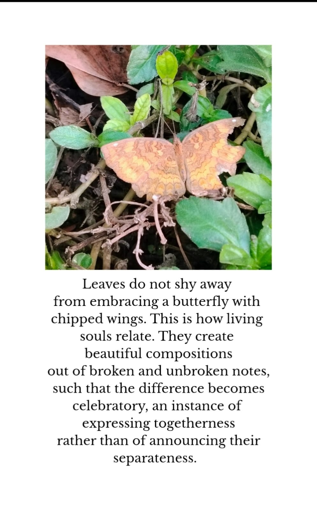

About the Photograph
I love to do photography, especially of nature. While working on this photo essay, I was dwelling upon acceptance and neurodivergence.
We usually keep separating normal from abnormal. That generates a sense of achieving an ideal, based on majoritarian understanding of normal.
Here, I am suggesting that brokenness is not an aberration but an expression of a unique self that each individual is, each creature is.
That uniqueness and multiplicity should not exclude but be celebrated and accepted with care.